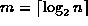
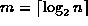
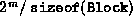
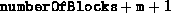

Data Structures and Algorithms
with Object-Oriented Design Patterns in C++
Data Structures and Algorithms
with Object-Oriented Design Patterns in C++
Program  defines both the constructor and the destructor
for the BuddyPool class.
The constructor takes an integer
which specifies the desired size of the storage pool in bytes.
The constructor allocates the memory for the storage pool
and initializes the free lists.
defines both the constructor and the destructor
for the BuddyPool class.
The constructor takes an integer
which specifies the desired size of the storage pool in bytes.
The constructor allocates the memory for the storage pool
and initializes the free lists.

Program: BuddyPool Class Constructor and Destructor Definitions
The BuddyPool class has four member variables,
m, numberOfBlocks, pool and sentinel
that are initialized by the constructor as follows:
The member variable m represents the size of the storage pool.
I.e., the size of the pool is  bytes.
The constructor computes the quantity ,
where n is the size of storage pool requested
by calling the function Log2Ceil.
bytes.
The constructor computes the quantity ,
where n is the size of storage pool requested
by calling the function Log2Ceil.
The number of blocks required for the storage pool is . The member variable numberOfBlocks is set to this value. An array that contains  blocks is dynamically allocated using operator new and the member variable pool is set to point at the array.
Since there are m+1 free lists,
the last m+1 blocks are used as the sentinels for the free lists.
The member variable sentinel points at the block
whose offset in the array is numberOfBlocks.
That way, we can access the  sentinel
by writing sentinel[i].
Each of the m+1 free lists is initially empty.
Therefore, the next and prev pointers in each sentinel
are set to point at the given sentinel itself (lines 7-11).
sentinel
by writing sentinel[i].
Each of the m+1 free lists is initially empty.
Therefore, the next and prev pointers in each sentinel
are set to point at the given sentinel itself (lines 7-11).
The entire pool is initially an unallocated area of size  .
The area is represented by the first block in the pool, pool[0].
This area is marked free and the k field is set to m.
Finally, the block is inserted into the free list for blocks of size
.
The area is represented by the first block in the pool, pool[0].
This area is marked free and the k field is set to m.
Finally, the block is inserted into the free list for blocks of size  which is the list attached to sentinel[m].
The insertion is done using the private member function InsertAfter.
Since all the free lists are doubly-linked lists,
the InsertAfter can easily do its work in constant time.
which is the list attached to sentinel[m].
The insertion is done using the private member function InsertAfter.
Since all the free lists are doubly-linked lists,
the InsertAfter can easily do its work in constant time.
Except for the call to operator new to allocate the array of Blocks, the running time of the constructor is dominated by the loop which creates the free lists. As a result, the worst-case running time for the constructor is O(m).
 Copyright © 1997 by Bruno R. Preiss, P.Eng. All rights reserved.
Copyright © 1997 by Bruno R. Preiss, P.Eng. All rights reserved.